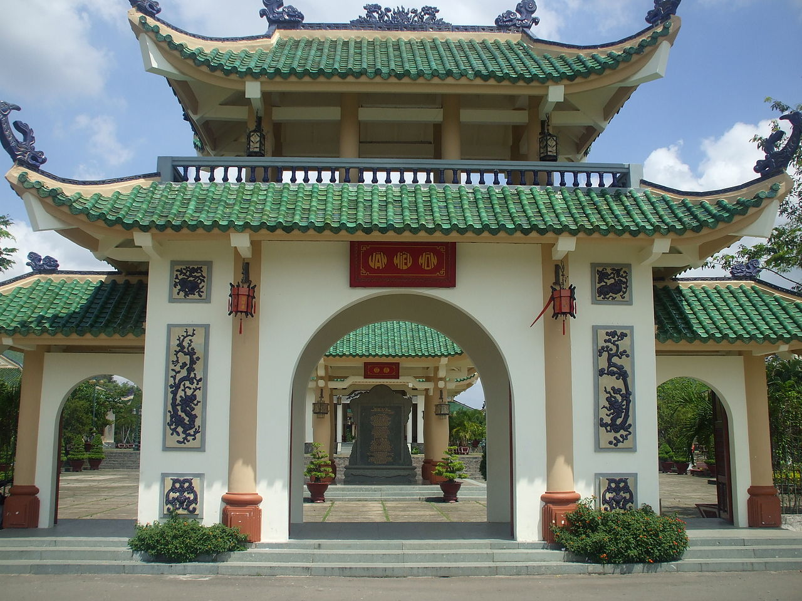
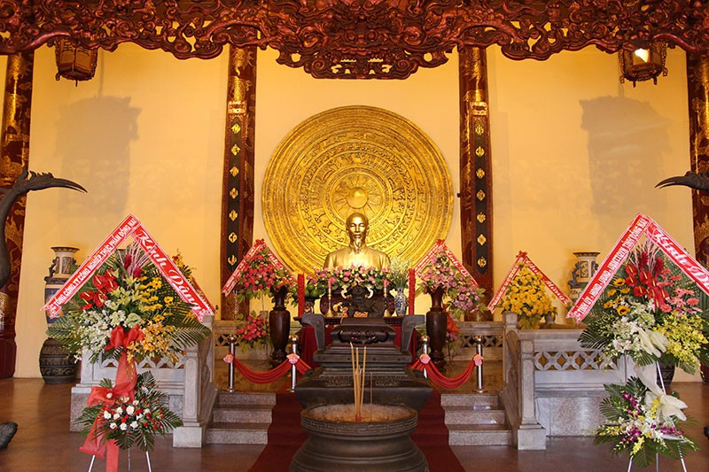
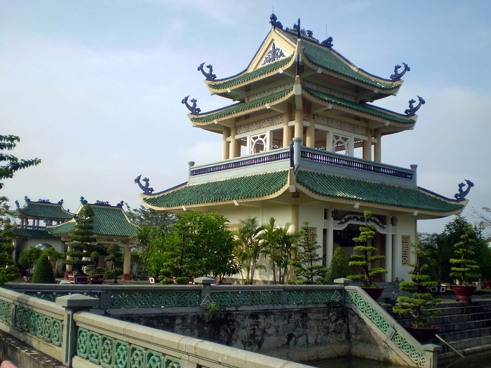

Văn miếu trấn biên

Nhắc đến Đồng Nai không thể không nhắc đến nét đẹp độc đáo Văn miếu Trấn Biên, nơi bảo tồn, gìn giữ và tôn vinh các giá trị văn hóa – giáo dục cùa vùng đất Biên Hòa. Tọa lạc trong khuôn vi có tổng diện tích lên tới 15 ha, thuộc phường Bửu Long, thành phố Biên Hòa, Đồng Nai. Nằm cách thành phố Hồ Chí Minh khoảng 33km.Từ thành phố HCM du khách có thể dễ dàng tới đây bằng nhiều phương tiện khác nhau như xe máy, ôtô, xe buýt.
Lịch sử hình thành, quá trình trùng tu và khôi phục.
Văn miếu được xây dựng đầu tiên ở xứ Đàng Trong (năm 1715), ngôi miếu này được lập lên để tôn
vinh
Khổng Tử và
các danh nhân văn hóa nước Việt. Văn Miếu Trấn Biên ra đời là một trong những biểu trưng cho
truyền
thống học
tập, hào khí và văn hóa của người Việt phương Nam, cũng được xem như là một “Văn Miếu Quốc Tử
Giám”
của vùng Nam
Bộ.
Năm 1715 (năm Ất Mùi), chúa Nguyễn Phúc Chu đã sai Ký lục Phạm Khánh Đức và Trấn thủ Nguyễn Phan
Long tiến hành
xây dựng Văn miếu Trấn Biên tại thôn Tân Lại, tổng Phước Dinh, huyện Phước Chánh. Nơi đây được
xây
dựng để chúa
Nguyễn Phúc Ánh tới hành lễ hai lần mỗi năm vào mùa xuân và mùa thu. Tuy nhiên sau năm 1802, khi
chúa Nguyễn lên
ngôi ở Huế thì việc hành lễ tại văn miếu giao lại cho quan tổng trấn thành Gia Định cùng với
trấn
quan Biên Hòa
và quan đốc học.
Văn miếu Trấn Biên đã có hai lần đại trùng tu
– Lần trùng tu thứ nhất vào năm Giáp Dần (1794). Vào thời điểm đó, chúa Nguyễn
Phúc
Ánh đã sai Lễ bộ Nguyễn Hồng
Đô lo việc trùng tu.
– Lần trùng tu thứ hai vào năm Tự Đức thứ 5 (Nhâm Tý, 1852) được sửa chữa với
quy
mô lớn hơn trước rất nhiều.
Đến năm 1861, Văn miếu Trấn Biên bị thực dân Pháp tới đốt phá khi chiếm đánh vùng Biên Hòa. Sau
hơn
137 năm từ
lúc thực dân Pháp tàn phá thì công trình này mới được khôi phục trên nền văn miếu cũ. Nằm cách
trung
tâm thành
phố Biên Hòa khoảng 3 km và gần Trung tâm Văn hóa Du lịch Bửu Long. Đến ngày nay, văn miếu Trấn
Biên
đã trở
thành điểm đến quen thuộc của người dân trong và ngoài tỉnh tới tham quan.
Nét độc đáo trong kiến trúc và không gian.
Văn miếu được xây dựng theo kiến trúc Văn Miếu Quốc Tử Giám ở miền Bắc. Bao gồm rất nhiều hạng mục khác nhau như nhà thờ chính, sân hành lễ, tả vu hữu vu,… Văn miếu được xây dựng với mục đích thể hiện truyền thống tôn sư trọng đạo, kính trọng hiền tài. Điểm nổi bật nhất trong lối kiến trúc của văn miếu Trấn Biên đó chính là những vòm mái cong, lợp ngói lưu ly màu xanh ngọc (gốm tráng men) vô cùng bắt mắt và thu hút. Những nét chạm khắc tinh tế nơi mái vòm cong cong, ở cổng hay ở các nhà bia.Sau khi tham quan Văn miếu môn, du khách sẽ được lần lượt chiêm ngưỡng những công trình khác như nhà bia truyền thống Trấn Biên – Đồng Nai, hồ Tịnh Quang, cổng tam quan, Khuê Văn Các, nhà bia thứ hai thờ Khổng Tử và cuối cùng là nhà thờ chính rộng lớn. Khu nhà thờ chính được xây dựng theo lối kiến trúc cổ kiểu nhà ba gian hai chái, nền lát gạch tàu, sơn son thếp vàng, trên các cột nhà treo đôi liễn đối. Trước nhà thờ chính các bạn sẽ tận mắt thấy một tấm bia lớn có khắc dòng chữ to: “Hiền tài là nguyên khí của quốc gia”. Ở gian giữa của văn miếu có bàn thờ Chủ tịch Hồ Chí Minh, ở trên tường thì có biểu tượng trống đồng – biểu tượng đặc trưng cho nền văn hóa Quốc Tổ Hùng Vương. Ở bên trái nhà là nơi thờ các danh nhân văn hóa Việt Nam, còn bên phải thì thờ các danh nhân đất Nam Bộ.

Các khu sinh hoạt truyền thống gồm có nhà truyền thống, bia truyền thống và các công trình phụ cận nhằm phục vụ các du khách tới tham quan tại đây. nơi bảo tồn, lưu giữ và tôn vinh các giá trị văn hóa– giáo dục cùa vùng đất Biên Hòa – Đồng Nai. Văn miếu như một bức tranh có sự hòa hợp giữa kiến trúc và thiên nhiên là cây cối, sông nước bao phủ, đem lại cho bạn cảm giác thoải mái, khiến cho tâm hồn trở nên thanh tịnh, bình an lạ thường.

Văn miếu mang lối kiến trúc đặc sắc về nghệ thuật, vừa cổ kính vừa trang nhã, đã thu hút hàng trăm ngàn lượt khách du lịch trong và ngoài tỉnh tới thăm. Còn gì hơn khi được mang trên mình chiếc áo dài truyền thống và lưu giữ những bức ảnh đẹp trong không gian vừa cổ kính, vừa trang nhã, mang đậm nét đẹp truyền thống và văn hóa. Chính vì thể nhiều người lựa chọn nơi đây là điểm chụp hình cưới để lưu lại những bức ảnh thanh lịch, tinh tế và cổ kính. Đây cũng chính là địa điểm nổi tiếng để chụp hình tốt nghiệp, hình kỷ yếu cho các bạn học sinh, sinh viên vừa đẹp tao nhã vừa thể hiện tinh thần văn hóa tôn sư trọng đạo. Ngoài ra hằng năm tại văn miếu cũng diễn ra nhiều hoạt động viếng thăm, tuyên dương tài năng trong lĩnh vực văn hóa, giáo dục. Văn miếu Trấn Biên được công nhận là một di tích lịch sử cấp quốc gia cần được bảo tồn và phát triển. Văn miếu mang lối kiến trúc đặc sắc về nghệ thuật, vừa cổ kính vừa trang nhã, đã thu hút hàng trăm ngàn lượt khách du lịch trong và ngoài tỉnh tới thăm. Còn gì hơn khi được mang trên mình chiếc áo dài truyền thống và lưu giữ những bức ảnh đẹp trong không gian vừa cổ kính, vừa trang nhã, mang đậm nét đẹp truyền thống và văn hóa. Chính vì thể nhiều người lựa chọn nơi đây là điểm chụp hình cưới để lưu lại những bức ảnh thanh lịch, tinh tế và cổ kính. Đây cũng chính là địa điểm nổi tiếng để chụp hình tốt nghiệp, hình kỷ yếu cho các bạn học sinh, sinh viên vừa đẹp tao nhã vừa thể hiện tinh thần văn hóa tôn sư trọng đạo. Ngoài ra hằng năm tại văn miếu cũng diễn ra nhiều hoạt động viếng thăm, tuyên dương tài năng trong lĩnh vực văn hóa, giáo dục. Văn miếu Trấn Biên được công nhận là một di tích lịch sử cấp quốc gia cần được bảo tồn và phát triển.